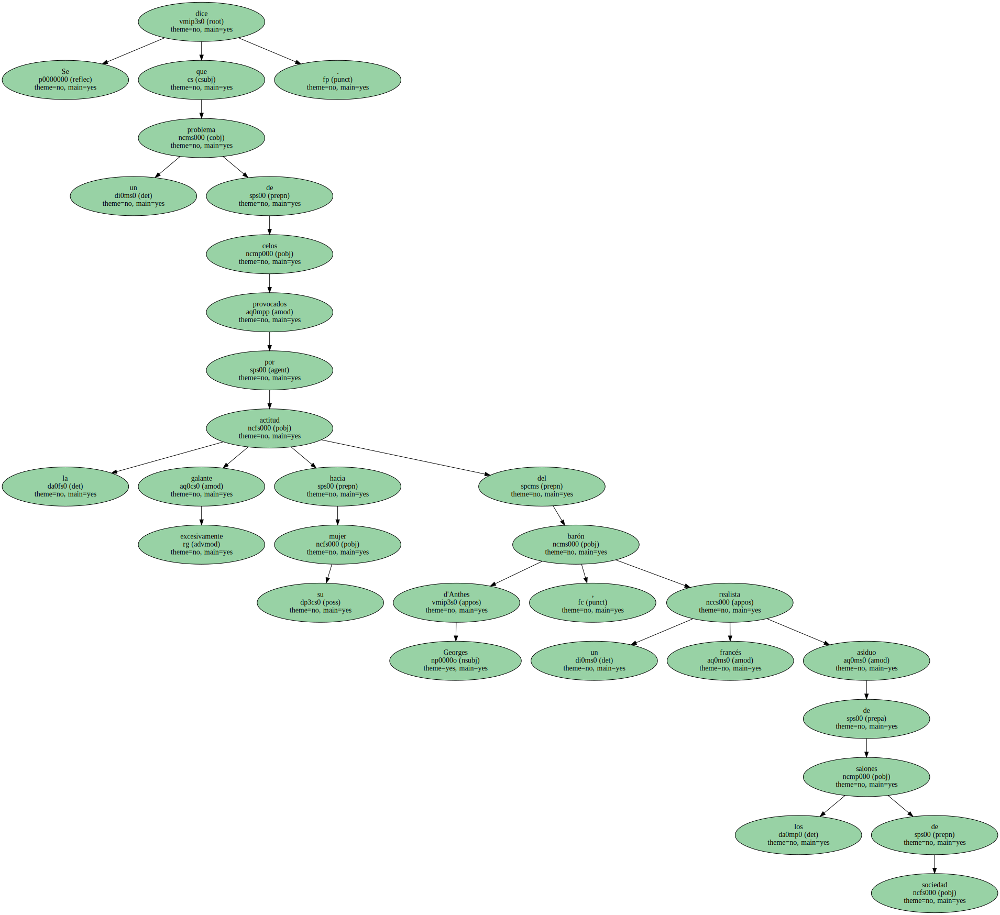
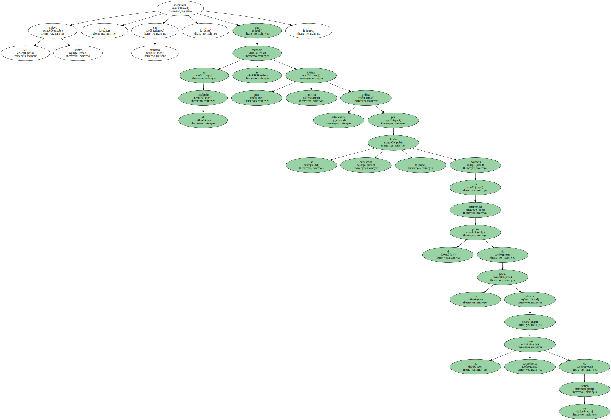
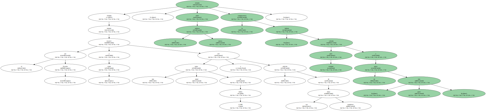
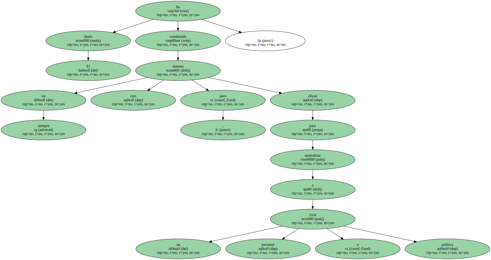
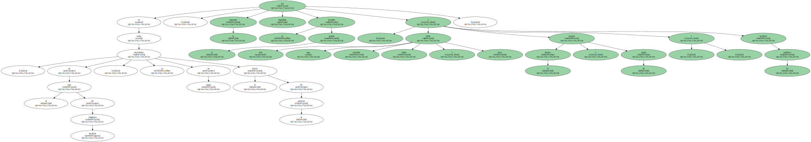
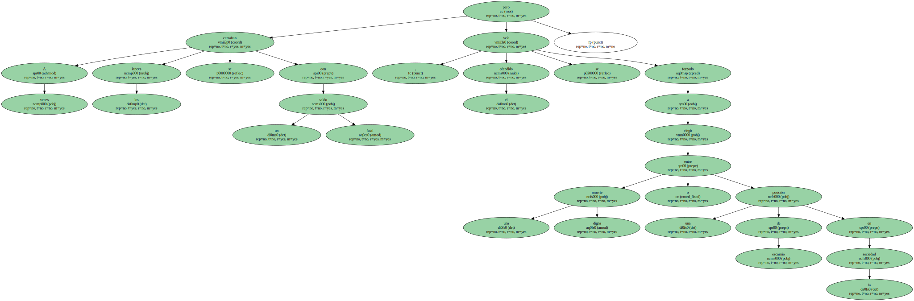
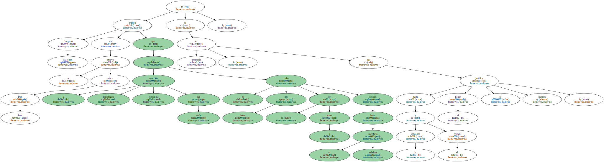
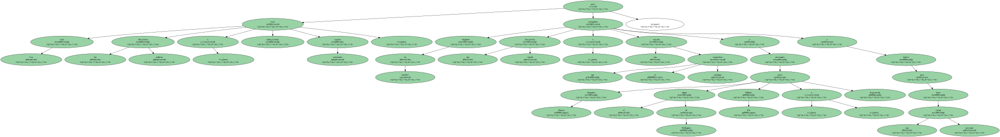
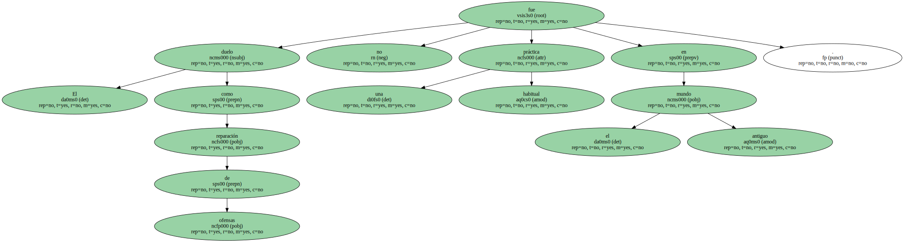

Se dice que un problema de celos provocados por la actitud excesivamente galante hacia su mujer del barón Georges d'Anthes , un realista francés asiduo de los salones de sociedad.
Sus amigos íntimos aseguraron , sin embargo , que en el trasfondo se escondía una intriga política astutamente urdida por los círculos cortesanos , incapaces de comprender el genio de un poeta abierto a las sospechosas ideas de su tiempo.
Aunque el zar Nicolás I intentó resarcir a su viuda con una renta anual de 11.000 rublos y la edición de sus obras completas , entre la rancia nobleza reinaba la complacencia : habían callado para siempre a un poeta - non grato -.
El duelo ha constituido siempre un sistema ruin , pero eficaz para neutralizar a un rival personal o político.
Si , como en el caso de Alejandro Pushkin , se encontraba en juego el honor de la persona , la respuesta era inmediata : se arrojaba el guante y sólo había que concertar fecha y hora , escoger el terreno y las armas , y nombrar los padrinos.
A veces los lances se cerraban con un saldo fatal , pero el ofendido se veía forzado a elegir entre una muerte digna o una posición de escarnio en la sociedad.
Porque , más que patrimonio y hacienda , más que la propia vida , el honor y la honra culminaban la escala de valores del hombre hasta hace poco menos de un siglo.

Gregorio Marañón explica en su ensayo sobre Don Juan que la reacción psicológica específica del varón es el culto del honor , de la honra llevado hasta el máximo sacrificio ; si es necesario hasta la venganza y el crimen , que el honor se justifica siempre -.
Los celos , las diferencias políticas o indiscreciones eran razones suficientes ; pero también un desplante , una simple descortesía o una mirada que se sospechara ambigua empujaban a personajes como Alejandro Dumas , el duque de Wellington , William Pitt o Espronceda a batirse para lavar una cuenta personal.
El duelo como reparación de ofensas no fue una práctica habitual en el mundo antiguo.
